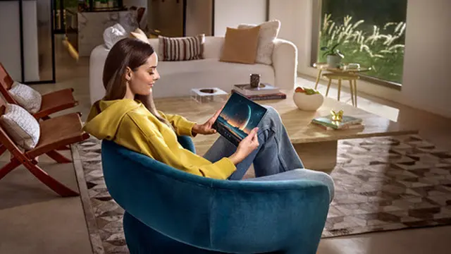

Huawei Rilis MatePad Pro 13.2 Bulan Depan, Ini Deretan Fiturnya
Tanggal :
23 Des 2023, 14:00 WIB
Jakarta - Huawei baru saja memperkenalkan perangkat tablet flagship terbarunya, MatePad Pro 13.2. Namun, perangkat ini baru akan dijual mulai bulan depan alias Januari 2024.
Perusahaan juga masih merahasiakan harganya. Namun, menurut Training Director Huawei Device Indonesia Edi Supartono, kehadiran Huawei Matepad Pro 13.2 untuk mengisi kebutuhan tablet dengan layar 13 inci yang dia klaim
belum banyak tersedia di Indonesia.
"Kami mengisi kebutuhan layar tablet 13 inci yang ternyata tidak begitu banyak tersedia di market. Itu berarti masih banyak kebutuhan yang belum terpenuhi, sehingga kami keluarkan produk 13 inci ini,"kata Edi, saat peluncuran Huawei Matepad 13.2 baru-baru
ini.
Tablet ini memiliki bobot ringan meski punya layar berukuran lebar. Matepad Pro 13.2 hadir dengan bobot 580 gram dengan ketebalan 5,5 mm. Sementara untuk jenis layar, Huawei menggunakan layar Flexible OLED Display.
"Huawei MatePad Pro 13.2 adalah tablet pertama yang menggunakan layar Flexible OLED Display. Artinya, tablet ini memiliki sudut-sudut yang kasat mata, sehingga membuat sisi-sisinya lebih luas layarnya. Maka dari itu, bezelnya terlihat tipis," kata Edi.
Selain itu, layar MatePad 13.2 telah mendapat Sertifikasi TUV Rheinland Eye Comfort 3.0 sehingga aman untuk kesehatan mata penggunanya.
Tablet terbaru yang dihadirkan dalam rangka memperingati sepuluh tahun kiprah Huawei di industri tablet ini, dilengkapi M-Pencil 3 Gen berteknologi Nearlink. Dengan M-Pencil ini, mampu memberikan konektivitas antar perangkat Huawei dengan kecepatan hingga
6 kali lipat.
Untuk diketahui, dengan teknologi Nearlink ini sensitivitas goresan pada layar bisa menembus hingga sepuluh lembar kertas. Seperti yang telah diperlihatkan oleh tim Huawei dalam pengenalan perangkat tersebut.
Huawei MatePad Pro 13.2 akan segera hadir pada awal tahun 2024 mendatang dengan dua varian warna, yaitu Golden Black dan Green.
"Kedua varian ini memiliki higstrength glass fibre material. Artinya, dibuat dari bahan yang durabilitasnya cukup baik untuk pemakaian sehari-hari. Kemudian keduanya juga anti fingerprints, sehingga pengguna tidak perlu
membersihkannya secara berulang kali karena tablet ini ramah di tangan," kata Edi.